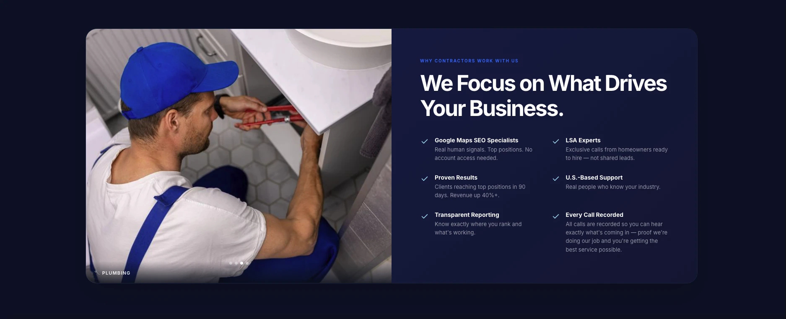

02 / Challenge
The question.
How can a marketing agency explain Google Maps SEO and Local Services Ads to busy local contractors while making the services approachable?
Case Study / 04
A clearer way to present a digital marketing offer, its value and the next step.
 Homepage hero
Homepage hero
01 / Context
Market Open Media is a marketing agency website focused on helping local service businesses attract more calls. The main website presents Google Maps SEO, Local Services Ads, industry-specific content and ways to get started.
The work combines brand identity, service architecture and conversion-focused messaging across a complete website rather than a single campaign landing page.
02 / Challenge
How can a marketing agency explain Google Maps SEO and Local Services Ads to busy local contractors while making the services approachable?
03 / Objectives
04 / Process
The main website organizes the agency's services, business categories, examples and contact routes into a unified experience. Its messaging emphasizes local visibility and the business calls that visibility can generate.
05 / Solution
A multi-page agency website with a consistent visual language, service information and conversion-focused navigation.
06 / Visual explorations
A branded representation of the current website, with direct access to the live experience.

Explore the complete Market Open Media website, not the campaign landing page.
Visit marketopenmedia.com07 / Results
A branded landing-page interface with reusable visual elements and a structured form journey.
Case study in progress. Add verified conversion performance, user feedback and business results before making outcome claims.